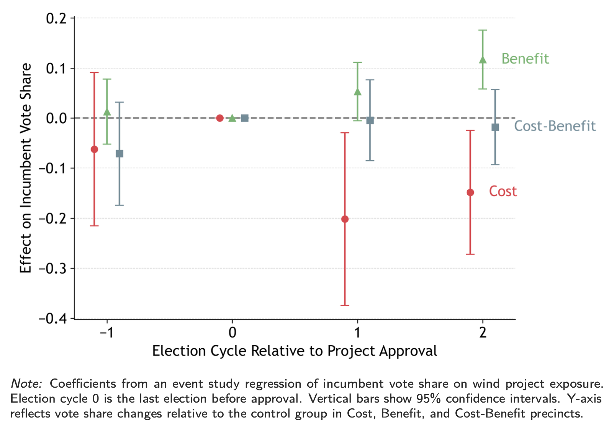
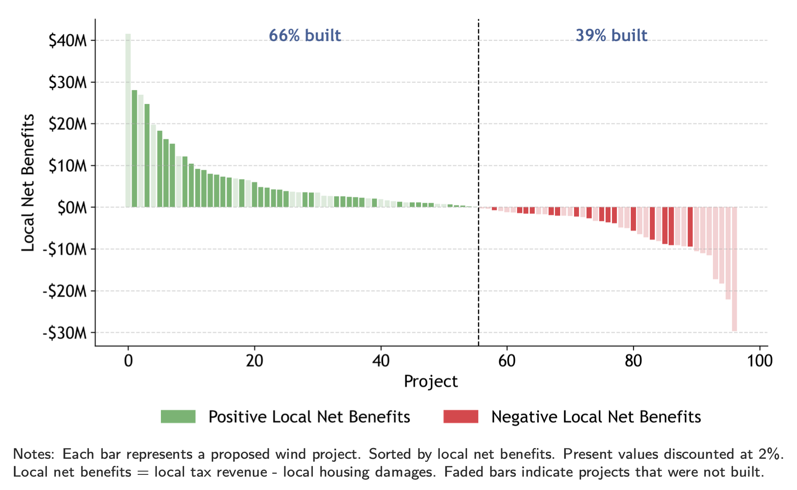
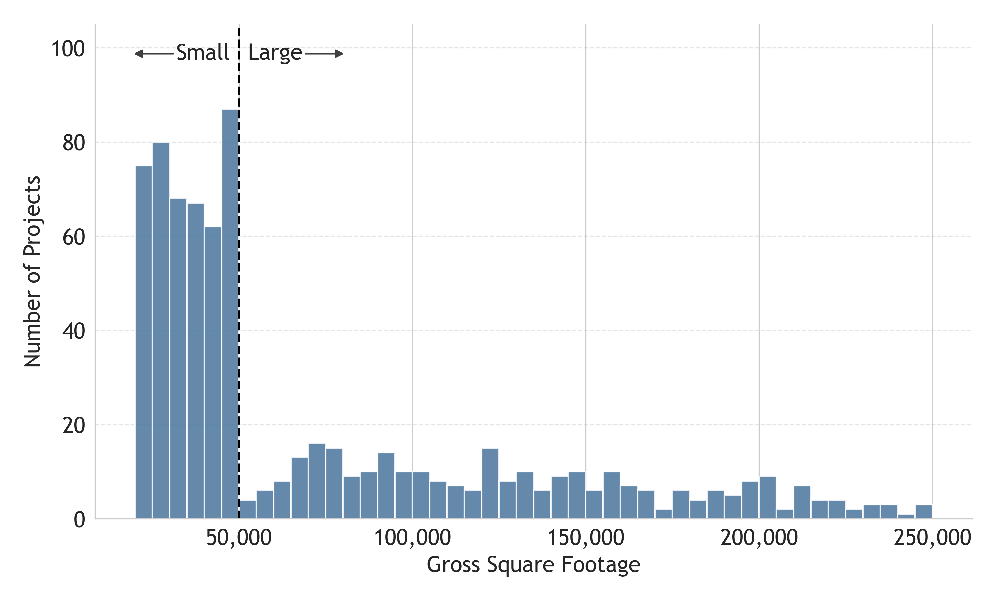

JOB MARKET PAPER
Wind energy projects in Illinois generate global environmental benefits that exceed local property value losses by more than a factor of thirty. Yet county governments often reject proposed projects. To assess the electoral incentives of permit-issuing county officials, I link spatial variation in local costs and benefits to precinct-level election results. Following approvals, incumbent county officials lose vote share in precincts that incur property value losses, but gain votes in precincts that benefit from higher school district property tax revenues.
 WORKS IN PROGRESS
The Price of Approval: Discretionary Review and Housing Supply in Boston
[FIGURE]
New housing developments of 50,000 square feet or more in Boston trigger Large Project Review, a discretionary approval process requiring impact studies, public hearings, and negotiated community benefits. Developers frequently size projects just below this threshold to avoid review. Based on the extent of project bunching, I estimate that review adds nearly $3 million in costs per affected project and has reduced housing delivered by large projects by at least 4 percent over the past two decades. The community benefits negotiated through review are small relative to both the compliance costs borne by developers and the property-tax revenue the city forgoes when projects are scaled down or never built.
